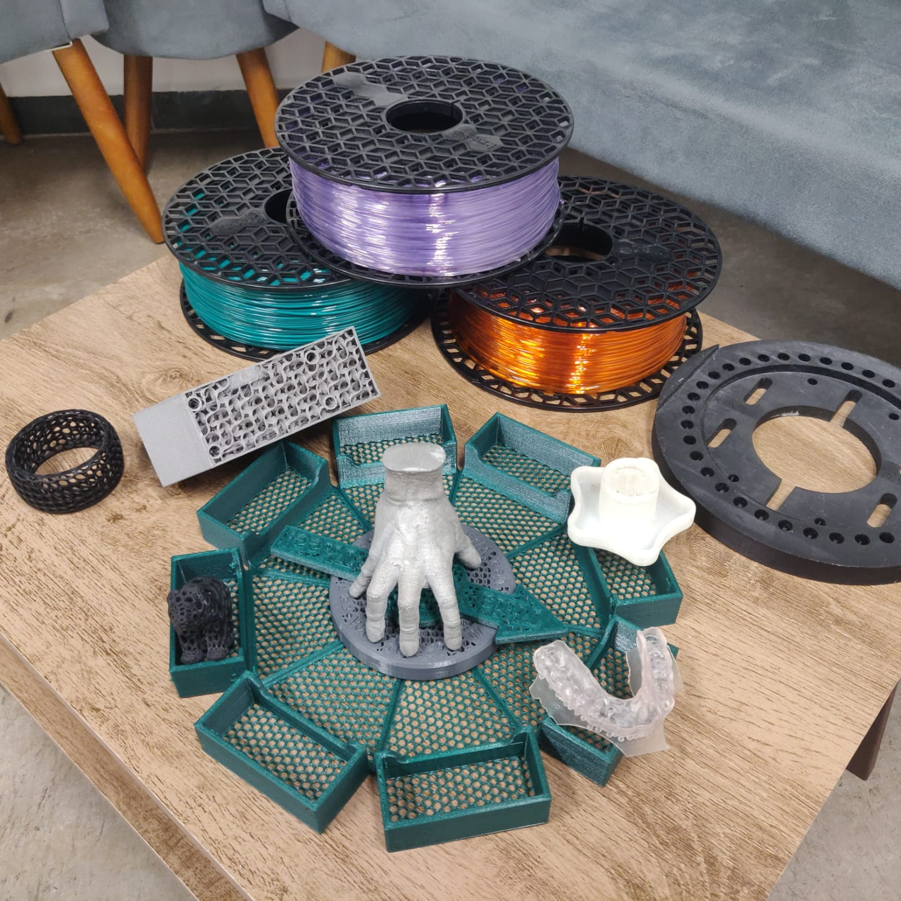
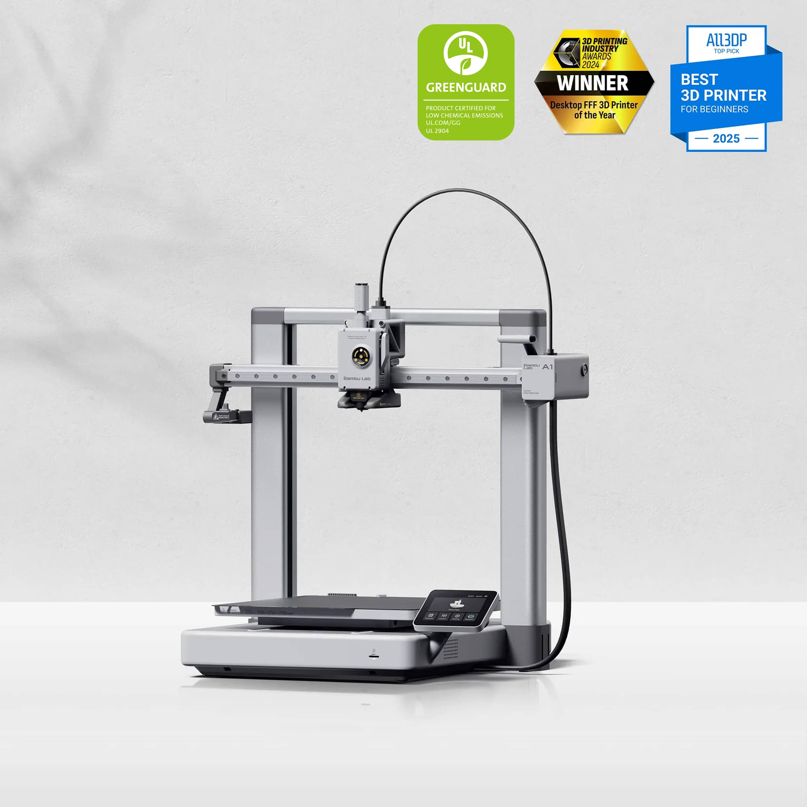
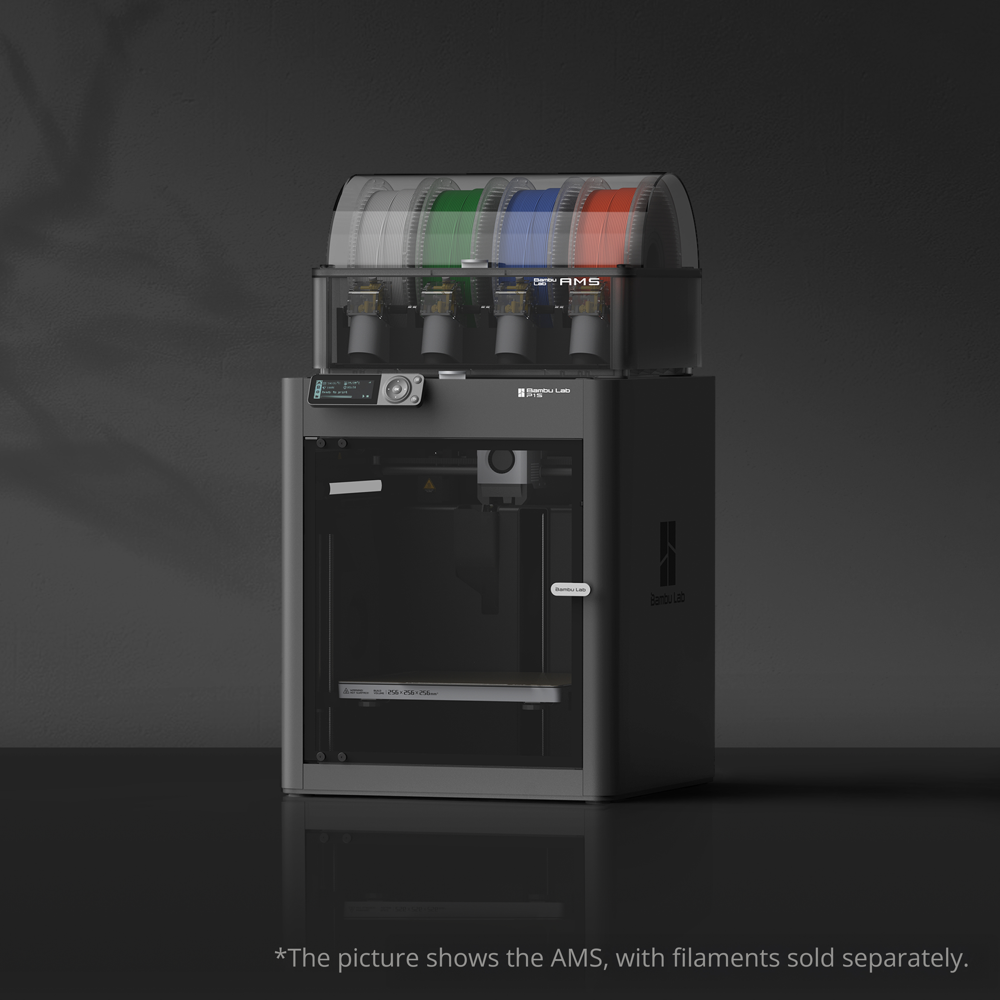
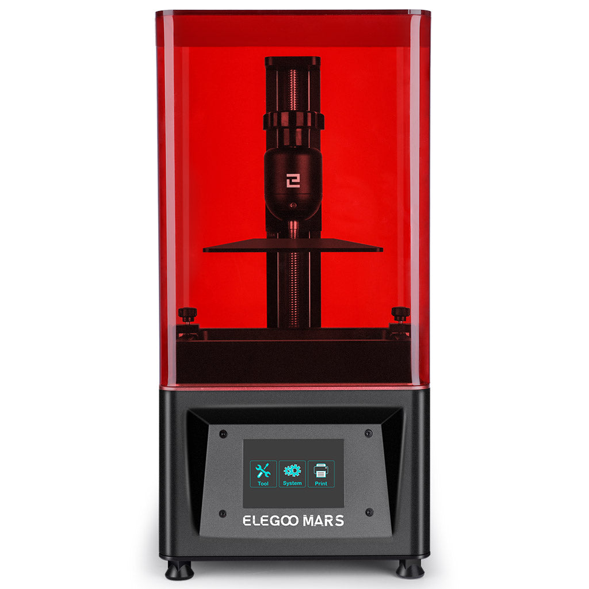
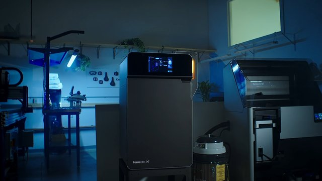

Fundamentos
Tipos de impresoras 3D
No existe una única forma de imprimir en 3D. En esta wiki el punto de partida práctico será FDM, usando una Bambu A1 como referencia para explicar los conceptos básicos.

Enfoque de esta wiki
La wiki cubrirá varias tecnologías, pero los fundamentos se explicarán desde FDM porque es la opción más común, accesible y útil para aprender impresión 3D doméstica. Para aterrizar los conceptos se usará la Bambu A1 como ejemplo base: una impresora FDM abierta, de tipo bedslinger, con extrusión directa, autonivelado y un flujo moderno de trabajo.
Esto no significa que todo se limite a la A1. Significa que, cuando se expliquen cama, hotend, primera capa, velocidades, perfiles, filamentos o problemas típicos, se partirá de una máquina concreta para que el contenido no quede abstracto.
FDM o filamento
FDM es la tecnología central para esta wiki. Derrite un filamento termoplástico, lo empuja por una boquilla caliente y lo deposita capa a capa sobre una cama. Es la mejor puerta de entrada para aprender materiales, mecánica, diseño funcional, mantenimiento y diagnóstico de errores.
En FDM el resultado depende de la relación entre cuatro bloques: material, máquina, laminador y diseño de la pieza. Si uno falla, la impresión puede despegarse, deformarse, salir débil o tener mal acabado aunque los otros tres parezcan correctos.
- Punto fuerte: coste relativamente bajo, gran variedad de materiales y piezas funcionales útiles.
- Punto fuerte: permite aprender fabricación real, tolerancias, orientación, resistencia y mantenimiento.
- Punto débil: líneas de capa visibles, anisotropía y dependencia fuerte de la primera capa.
- Punto débil: materiales técnicos como ASA, PC o nylon no se comportan igual en una máquina abierta que en una cerrada.

Conceptos FDM que se usarán constantemente
Filamento
Es el material en forma de hilo: PLA, PETG, TPU, ASA, PA, PC y otros. Cada uno pide temperaturas, ventilación y cuidados distintos.
Hotend y boquilla
El hotend funde el material y la boquilla define la salida. Boquilla, temperatura y caudal limitan la velocidad real.
Cama y primera capa
La cama sostiene la pieza. La primera capa decide si la impresión empieza bien o si fallará por adhesión.
Slicer
El laminador convierte el modelo 3D en instrucciones: capas, velocidades, soportes, perímetros, relleno y temperaturas.
Arquitecturas FDM comunes
Cartesiana tipo bedslinger
La cama se mueve en un eje y el cabezal en otro. Es el caso de muchas impresoras abiertas, incluida la Bambu A1. Buena para empezar, simple y accesible.
CoreXY
El cabezal se mueve rápido en X/Y y la cama suele bajar en Z. Muy común en máquinas cerradas rápidas y técnicas.
Delta
Tres brazos mueven el cabezal. Son rápidas y llamativas, pero menos comunes para aprendizaje general.
Idex o multiherramienta
Usan cabezales independientes o sistemas de cambio. Sirven para soportes solubles, colores o materiales distintos, pero añaden complejidad.

Por qué usar la Bambu A1 como ejemplo
La Bambu A1 sirve bien como referencia porque representa una FDM moderna de entrada: tiene calibraciones automáticas, buen ecosistema de perfiles, extrusor directo y suficiente calidad para aprender sin pelearse constantemente con la máquina. Al mismo tiempo, sigue siendo abierta, así que deja claros los límites con materiales exigentes.
| Concepto | Cómo se ve en una A1 | Qué enseña |
|---|---|---|
| Máquina abierta | No tiene cámara cerrada de serie. | PLA, PETG y TPU encajan mejor; ASA, ABS, PC y nylon tienen límites. |
| Extrusión directa | El empuje del filamento está cerca del hotend. | Facilita TPU y mejora control de retracciones. |
| Autonivelado | Compensa variaciones de cama. | Ayuda, pero no sustituye limpieza ni buena primera capa. |
| Perfiles modernos | El slicer parte de configuraciones ya razonables. | Permite aprender ajustando menos variables a la vez. |
Resina
Usa resina líquida que se solidifica con luz. Destaca en detalle fino, miniaturas, joyería y piezas pequeñas de alta definición visual.
- Punto fuerte: muchísimo detalle superficial.
- Punto débil: manipulación más sucia, postcurado y mayor exigencia de seguridad química.

Tipos de resina
En escritorio se suelen ver impresoras MSLA/LCD, donde una pantalla enmascara luz UV para curar capas completas de resina. También existen SLA láser y DLP, pero para el usuario medio lo importante es entender que resina no es “FDM más precisa”: es otro flujo, con lavado, curado y residuos químicos.
SLS y tecnologías industriales
En estas familias aparece polvo sinterizado, metal o procesos mucho más caros y técnicos. Son relevantes para entender el ecosistema, pero no suelen ser la compra lógica de un usuario doméstico.

Otras tecnologías que conviene conocer
| Tecnología | Material habitual | Uso típico | Por qué no suele ser doméstica |
|---|---|---|---|
| SLS | Nylon en polvo | Piezas funcionales sin soportes clásicos. | Equipo, polvo, limpieza y coste. |
| MJF | Polvo de PA | Producción profesional de piezas resistentes. | Proceso industrial completo. |
| Metal | Polvo o filamento cargado | Piezas metálicas técnicas. | Postprocesado, sinterizado y control profesional. |
| Cerámica | Pastas o suspensiones | Diseño, arte, prototipos y piezas especiales. | Necesita secado, cocción y proceso propio. |
Cuál conviene elegir
| Objetivo | Tecnología más lógica | Motivo |
|---|---|---|
| Aprender y hacer piezas útiles | FDM | Más barato, más didáctico y más flexible para empezar. |
| Miniaturas o detalle extremo | Resina | Gana con claridad en definición fina. |
| Producción técnica avanzada | Industrial | Entra otro nivel de costes y proceso. |
Comparativa rápida FDM vs resina
| Criterio | FDM | Resina |
|---|---|---|
| Facilidad inicial | Más amigable para empezar. | Más exigente en limpieza y seguridad. |
| Detalle fino | Correcto, con líneas visibles. | Muy alto. |
| Piezas funcionales grandes | Mejor opción doméstica. | Limitada por volumen y fragilidad de algunas resinas. |
| Coste operativo | Filamento, boquillas y mantenimiento. | Resina, alcohol/lavado, guantes, filtros y curado. |
| Seguridad | Depende del material y ventilación. | Siempre requiere protocolo químico. |
Error común al elegir
Mucha gente compra por estética de resultado sin pensar en el tipo de piezas que quiere hacer. Si necesitas soportes, accesorios, cajas o piezas funcionales, una FDM suele tener mucho más sentido que una impresora de resina.